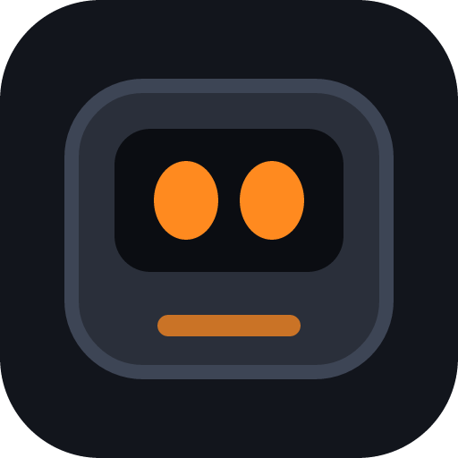

HUE
HUE est un compagnon de bureau vivant conçu avec Rust, Tauri 2 et Vite. Il prend la forme d'un petit personnage animé qui vit directement sur votre écran, réagit en temps réel à l'activité de votre PC et peut discuter avec vous. Son identité et son tempérament unique sont directement inspirés des composants de la machine sur laquelle il réside !
Exécutable autonome sans installateur sous Windows • Compilable depuis les sources sous Linux.
Fonctionnalités Principales
Évolue directement au premier plan de votre écran sans cadre de fenêtre. Déplacez-le, lancez-le ou laissez-le patrouiller le long de votre barre des tâches !
L'identité de HUE dépend de votre configuration : CPU, RAM, GPU et stockage déterminent son profil, ses réactions et ses répliques.
Discutez avec HUE via n'importe quelle API compatible OpenAI ou utilisez un modèle local GGUF privé grâce à l'intégration native de llama.cpp.
HUE s'exprime vocalement avec des bruitages rétro modulables en vitesse et en tonalité, inspirés de l'esthétique Nintendo.
Se cache automatiquement lorsqu'un jeu, OBS Studio ou une application en plein écran est détectée pour ne jamais gêner vos sessions.
Développé avec Tauri 2 et Rust pour une consommation mémoire minimale et une réactivité instantanée.
Changelog du projet
Version 1.0.0 [17/10/2026]
Lancement Officiel
- Déploiement du runtime natif sous Tauri 2 & Rust.
- Système de déplacement sur le bureau : patrouille, barre des tâches et interactions physiques.
- Moteur de dialogue compatible OpenAI API & GGUF Local (llama.cpp).
- Synthèse vocale audio temps réel inspirée du format Animalese.
- Détection automatique du plein écran, des jeux et d'OBS (Mode discret).
- Option de démarrage avec la session Windows et icône en zone de notification.
- Code source ouvert et disponible sur GitHub.